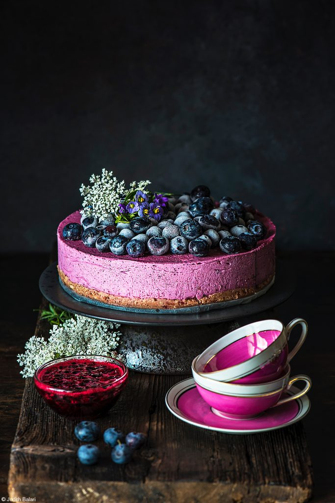
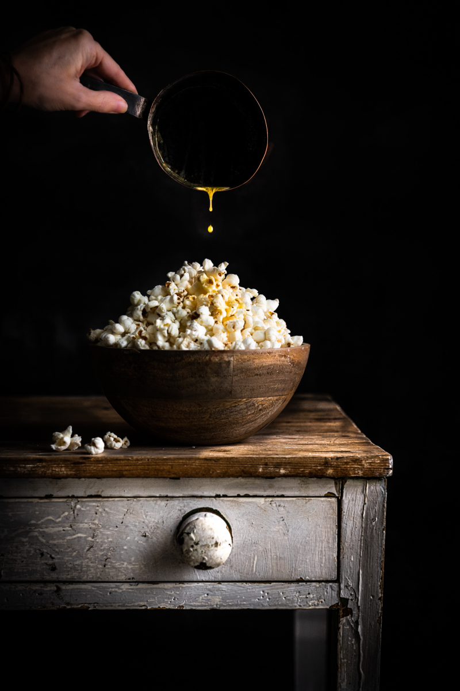
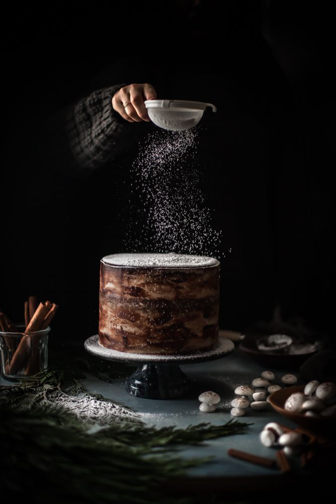

Beautifull blueberry cake

"In this meticulously composed image, a decadent violet-blueberry cake takes center stage, its velvety layers hinting at a sumptuous indulgence waiting to be savored. Adorning the cake's crown are plump, succulent blueberries, their deep violet hues offering a striking contrast against the cake's delicate pastel tones. Each blueberry seems to glisten under the soft glow of the surrounding light, evoking a sense of freshness and natural allure.
Flanking either side of the cake stand two dainty pink mugs, their smooth surfaces reflecting the ambient light with a subtle sheen. Positioned with precision, these mugs provide a charming accompaniment to the cake, hinting at the promise of a cozy moment shared over a delightful treat.
Adding an extra touch of whimsy to the tableau is a petite jar of jam, nestled beside the cake with understated elegance. The jar's translucent glass catches the light, casting a gentle radiance upon the rich, jewel-toned contents within. This delightful addition serves as a tantalizing suggestion of the cake's potential pairing possibilities, inviting the viewer to imagine the delectable combinations awaiting exploration.
Together, these elements harmonize to create a scene that not only tantalizes the taste buds but also captivates the senses with its artful presentation and inviting ambiance."
Datum, 2024 February 4
John McKenzie, Cover Magazine
Popcorn with caramel dropping

"In this captivating composition, a bowl overflowing with fluffy, golden popcorn commands attention at the forefront of the scene. The popcorn, delicately popped to perfection, forms a delightful mound within the vessel, promising a satisfying crunch with every bite. Its warm, inviting tones evoke a sense of comfort and indulgence, inviting the viewer to partake in its irresistible allure.
Hovering above the bowl, suspended in mid-air, is a mug filled to the brim with rich, velvety caramel sauce. With a gentle tilt, a stream of caramel cascades gracefully from the mug, descending in a mesmerizing ribbon onto the awaiting popcorn below. The caramel's molten texture captures the light, casting a soft glow that dances across the surface of the popcorn, imbuing it with a luscious sheen.
Nestled against the backdrop of an old-styled cupboard, the scene exudes a nostalgic charm that harks back to simpler times. The weathered wood of the cupboard exudes a sense of history and character, its rustic allure serving as the perfect complement to the indulgent display before it.
Together, these elements coalesce to form a tableau that not only tantalizes the taste buds but also captivates the senses with its artful presentation and evocative ambiance. Through skillful composition and meticulous attention to detail, this photograph transports the viewer to a realm where culinary delights and nostalgic reverie intertwine in perfect harmony."
Datum, 2024 Mars 2
Mark Noalan, Food Cover Photo
Silver spagetti fork

"In this captivating composition, the photographer skillfully captures the essence of culinary artistry against a dramatic black backdrop. The focal point of the image is a gleaming silver fork, meticulously poised amidst a delicate tangle of freshly cooked spaghetti. Each strand is elegantly entwined around the tines of the fork, creating a mesmerizing display of texture and form.
The stark contrast between the polished silver and the dark background adds depth and intensity to the scene, drawing the viewer's attention with its striking simplicity. The meticulous attention to detail is evident in the way the light delicately caresses the contours of the fork, casting subtle reflections that dance across its surface.
The composition exudes a sense of sophistication and refinement, inviting the viewer to appreciate the beauty in the everyday act of dining. Through expert lighting and composition, the photographer has transformed a humble culinary utensil into a captivating work of art, inviting the viewer to savor every moment captured within the frame."
Datum, 2024 January 20
Elisabeth Pettersson, World´s Greatiest Photo
Chocolate winter cake

In this meticulously crafted photograph, a sumptuous brown chocolate cake takes center stage, its velvety surface beckoning with decadence. Above the cake, a hand delicately holds a sugar sieve, with granules of sugar cascading gently onto the awaiting dessert, creating an enchanting spectacle of sweetness. The soft, natural lighting enhances the richness of the chocolate, casting inviting shadows that add depth to the scene.
Adjacent to the cake, a glass mug stands adorned with a dusting of fragrant cinnamon, adding a touch of warmth and spice to the composition. The mug, poised elegantly, complements the indulgent nature of the cake, promising a sensory journey of flavors and aromas.
Amidst this delectable tableau sits a cluster of small, white mushrooms, their delicate forms providing a whimsical contrast to the opulence of the confectionary delights. Their presence introduces a subtle element of earthiness, grounding the scene in the natural world and adding an intriguing layer of visual interest.
Through skillful composition and attention to detail, this photograph captures the essence of culinary delight, inviting viewers to savor the moment and indulge in the pleasures of taste and texture. It celebrates the artistry of gastronomy, transforming everyday ingredients into a captivating feast for the senses.
Datum, 2024 Februarry 14
Jennife Whickleberg, Photo Magazine